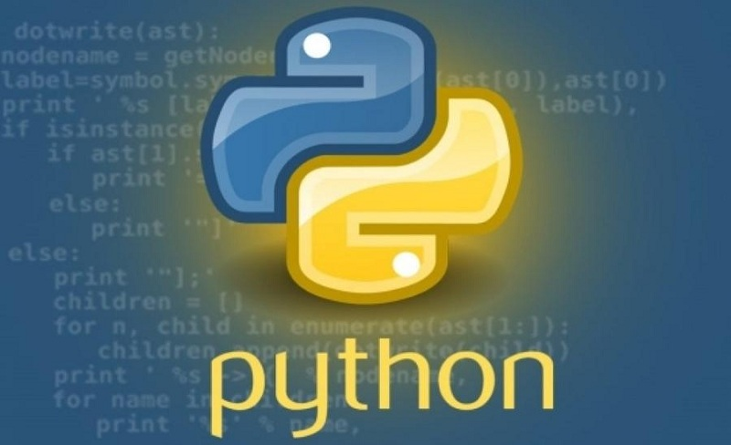
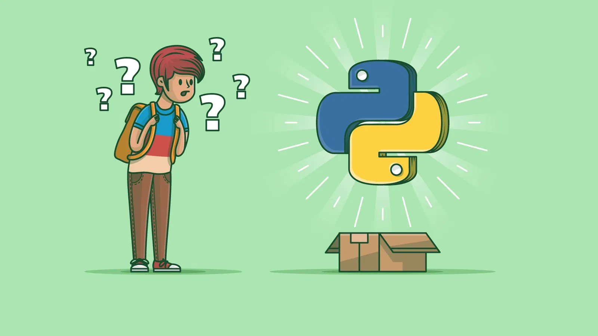
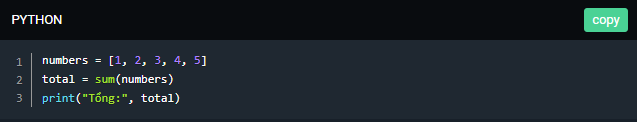

Python là gì? Tổng hợp kiến thức cơ bản cho người mới bắt đầu

Ⅰ.Giới thiệu
⏯ Nhắc đến ngôn ngữ lập trình phổ biến nhất thì Python luôn luôn được xếp trong top đầu trong hầu hết các bảng xếp hạng. Với sự phát triển của khoa học dữ liệu hiện nay, Python lại càng được ưa chuộng hơn nhờ tốc độ xử lý dữ liệu của mình. Bài viết hôm nay mình sẽ cùng các bạn tìm hiểu xem Python là gì? và các bước để tự học lập trình Python nhé.
1. Khái niệm về Python?
💬 Python là một ngôn ngữ lập trình cấp cao (high-level programing language) mã nguồn mở và đa năng, được sử dụng rộng rãi trong nhiều lĩnh vực như phát triển web, khoa học dữ liệu, trí tuệ nhân tạo, và tự động hóa hệ thống, ...
💬 Là 1 ngôn ngữ kịch bản (scripting language) giống với Javascript hay Ruby, thay vì biên dịch toàn bộ chương trình thành mã máy như các ngôn ngữ như C, C++, Golang hoặc Java, các ngôn ngữ scripting thường được diễn giải (interpreted) trực tiếp khi chạy.
Điều này giúp quá trình phát triển nhanh hơn, vì lập trình viên có thể viết, chạy và sửa lỗi một cách dễ dàng mà không cần qua nhiều bước biên dịch.
Ⅱ. Cú pháp đặc điểm nổi bật của Python.
1. Cú pháp đơn giản và dễ đọc
📌 Cú pháp của Python gần giống với tiếng Anh tự nhiên, giúp lập trình viên hay những bạn mới bắt đầu, tiếp cận với việc lập trình một cách dễ dàng, đây là một trong những lý do chính khiến python trở nên ngày càng phổ biến. Dưới đây là so sánh giữa code Python và ngôn ngữ C++ khi bạn muốn cộng một dãy số.

2. Interpreted Language
-Interpreted Language (ngôn ngữ được diễn giải) là một loại ngôn ngữ lập trình trong đó mã nguồn không cần phải được biên dịch thành mã máy trước khi thực thi. Thay vào đó, mã nguồn được thực thi trực tiếp bởi một trình thông dịch (interpreter).
Python là một ngôn ngữ như vậy, bạn có thể dễ dàng thử nghiệm các đoạn mã nhỏ, kiểm tra kết quả ngay lập tức, và gỡ lỗi dễ dàng hơn.

Ví dụ: Bạn có file code hello.py như bên dưới, để chạy chương trình này, bạn chỉ cần mở terminal hoặc command prompt và nhập python hello.py. Trình thông dịch Python đọc tệp hello.py, mỗi dòng mã được dịch và thực thi ngay lập tức, kết quả Hello, World! được in ra màn hình.

📯 Để chạy chương trình này bằng Java bạn cần thực hiện hai bước: chạy lệnh javac HelloWorld.java để trình biên dịch Java (javac) chuyển đổi mã nguồn (HelloWorld.java) thành mã bytecode (HelloWorld.class). Sau đó chạy lệnh java HelloWorld để máy ảo Java (JVM) thực thi mã bytecode trong tệp HelloWorld.class.

Tuy nhiên, do phải dịch và thực thi mã trong thời gian thực, ngôn ngữ diễn giải như Python thường chậm hơn so với các ngôn ngữ biên dịch.
3. High-level Language
-High-level Language (ngôn ngữ cấp cao) là loại ngôn ngữ lập trình được thiết kế để dễ đọc, dễ hiểu và gần gũi với ngôn ngữ tự nhiên của con người hơn so với ngôn ngữ máy hay còn gọi là ngôn ngữ assembly (ngôn ngữ cấp thấp).

Ví dụ: So sánh Python và ngôn ngữ Assembly cùng tính tổng của hai số sau đó in ra kết quả. Môn học làm mình ám ảnh nhất khi ở trường đại học chính là môn "ngôn ngữ máy".


4. Kiểu dữ liệu động
Python là một ngôn ngữ lập trình kiểu dữ liệu động (dynamically typed), có nghĩa là bạn không cần phải khai báo kiểu của biến trước khi sử dụng, và một biến có thể lưu trữ các giá trị với các kiểu dữ liệu khác nhau trong suốt vòng đời của nó.
Ví dụ: Trong C, bạn phải khai báo rõ ràng kiểu dữ liệu của mỗi biến trước khi sử dụng (int, float, char, v.v.). Biến x được khai báo là số nguyên (int), và bạn không thể gán một giá trị chuỗi ("Hello") cho x vì C không cho phép thay đổi kiểu dữ liệu của biến sau khi đã khai báo, bạn hoàn toàn có thể làm được điều này với Python.


5. Hỗ trợ nhiều mô hình lập trình
🔦 Python là một ngôn ngữ lập trình đa mô hình (multi-paradigm), có nghĩa là nó hỗ trợ nhiều mô hình lập trình khác nhau:
Ⅲ. Trên Python bạn làm được những gì?
1. Phát triển Web
🏹 Python là một trong những ngôn ngữ phổ biến được sử dụng trong phát triển web (Web Development) , nhờ vào các framework mạnh mẽ như Django và Flask.
🏹 Những framework này giúp lập trình viên phát triển các ứng dụng web một cách nhanh chóng và an toàn. Một vài ứng dụng nổi tiếng xây dựng trên nền tảng Django như: Instagram, Spotify, YouTube (đời đầu).
Ví dụ: Tạo ứng dụng web đơn giản với Flask.

2. Machine Learning và AI
👉 Machine Learning (Học máy) là một lĩnh vực của trí tuệ nhân tạo (AI) cho phép các hệ thống học hỏi từ dữ liệu, phát hiện các pattern và đưa ra quyết định mà không cần phải lập trình cụ thể cho từng nhiệm vụ.Python đã hỗ trợ công việc này bằng hàng hoạt các thư viện hữu ích như:
Ví dụ:Phân loại hoa Iris với scikit-learn

3. Công cụ Tự động hóa
👉 Nếu bạn muốn tìm một ngôn ngữ dễ dàng viết chương trình tự động hóa các tác vụ lặp đi lặp lại, giúp tiết kiệm thời gian và giảm thiểu lỗi so với việc thực hiện thủ công, thì Python chính là lựa chọn hoàn hảo dành cho bạn với cú pháp đơn giản, dễ nhớ. Ví dụ: Tự động gửi email thông báo.

4. Phát triển Game
👉 Python, mặc dù không phải là ngôn ngữ lập trình chính trong ngành công nghiệp phát triển game so với C++ hay C#, tuy nhiên nó vẫn được sử dụng rộng rãi trong các dự án game nhỏ, game giáo dục, hoặc các nguyên mẫu (prototypes) nhờ vào sự hỗ trợ của các thư viện như Pygame, Pyglet, và Arcade.

5. Networking và Cybersecurity
👉 Python cung cấp các công cụ để xây dựng các ứng dụng mạng như: tạo server và client TCP/UDP, quản lý kết nối, và tương tác với các giao thức mạng khác nhau. Python cũng có thể được sử dụng để viết các công cụ kiểm tra mạng, theo dõi và phân tích lưu lượng mạng, thực hiện các tác vụ tự động hóa trong quản trị mạng.
Ví dụ:Tạo một máy chủ TCP đơn giản

IV. Tổng Kết
📌 Python là một ngôn ngữ lập trình lý tưởng cho người mới bắt đầu nhờ vào cú pháp đơn giản, dễ đọc và dễ hiểu và ứng dụng rất nhiều.
📌 Với thiết kế thân thiện và tài liệu phong phú, Python giúp người học nhanh chóng nắm bắt các khái niệm cơ bản và tiến xa hơn trong lập trình, đặt việt với những bạn đam mê phân tích dữ liệu.
📌 Và được đưa vào trong chương trình học trung học phổ thông machine learning, AI thì Python là một ngôn ngữ tuyệt vời không thể bỏ qua.
Bạn thấy bài viết hay và hữu ích? Đừng ngại Share với bạn bè và đồng nghiệp nhé! Cảm ơn bạn 🧡
Bài Viết Tham Khảo